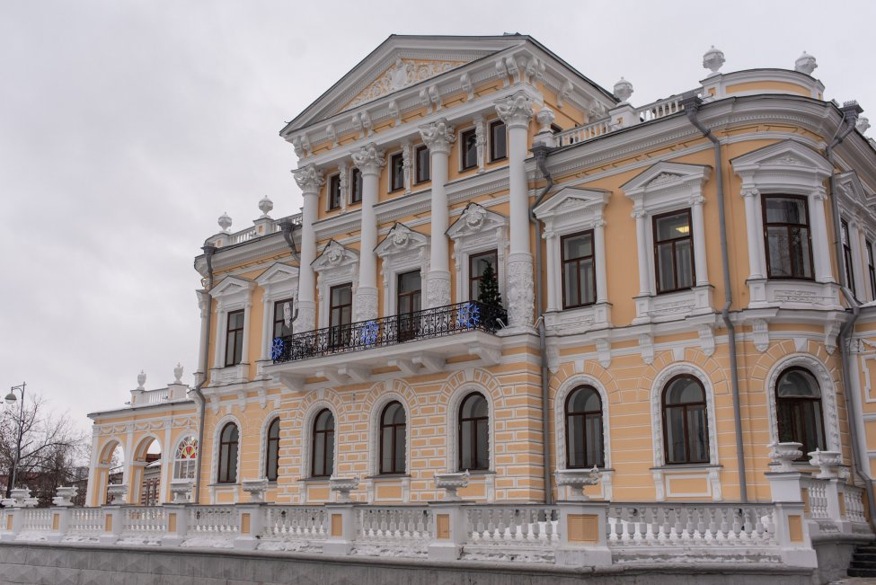

5. Дом Мешкова
Пермь, улица Монастырская, 11 · Найти на Яндекс Картах

История места
Дом Мешкова — филиал Пермского краеведческого музея. Его историческая экспозиция рассказывает о Прикамье с древнейших времён до начала XX века, включая возникновение заводов и образование Перми.
Особняк был восстановлен в 1889 году по проекту Александра Турчевича. История здания и его владельца Николая Мешкова позволяет продолжить разговор о предпринимателях и благотворительности губернской Перми.
Значение для Перми и России
Музей помогает увидеть основание города в более широком контексте истории края. Он сохраняет исторические предметы и делает сведения о прошлом доступными для изучения.